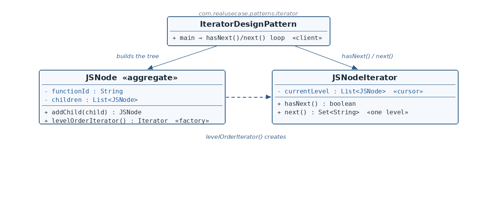

JSNode.java — the aggregate
☕ 4 min read · 🎬 Video walkthrough · 📊 UML diagram · 💻 Runnable code
⚡ In a nutshell — Provide a way to access the elements of an aggregate sequentially, without exposing its internal representation.
Provide a way to access the elements of an aggregate sequentially, without exposing its internal representation. All traversal state lives in the iterator, not the collection — so multiple independent iterations can run over the same structure at once, and clients traverse through two methods only: hasNext() / next().
Workflow engines store function-call trees (JSNode — a node per function with children it invokes). Executing such a workflow means walking the tree level by level: everything at depth 0, then depth 1, and so on — a breadth-first traversal where each level can be scheduled as a batch. Exposing the tree's internals to every consumer would couple them all to its shape. The production fix: the aggregate hands out a level-order iterator, and consumers just loop hasNext()/next(), receiving one level's function-ids per step.
JSNode is the aggregate: id + children, plus the factory method levelOrderIterator() — the client never constructs an iterator directly.JSNodeIterator implements the JDK's Iterator<Set<String>>: its currentLevel list is the cursor — all traversal state lives here, not in the tree.next() returns the current level's ids and advances the cursor by collecting all children — a classic BFS frontier without an explicit queue.
Reading the diagram: the client builds the tree, then talks only to the iterator's hasNext/next. The dashed arrow is the aggregate's factory method creating the iterator — the only coupling between the two.
JSNode — Aggregate — a function-call tree node; hands out iterators via levelOrderIterator().JSNodeIterator — Iterator — holds the traversal cursor; yields one level's ids per next().IteratorDesignPattern — Client — builds a tree, loops hasNext()/next().public class JSNode {
private final String functionId;
private final List<JSNode> children = new ArrayList<>();
public JSNode(String functionId) { this.functionId = functionId; }
public JSNode addChild(JSNode child) {
children.add(child);
return this;
}
public Iterator<Set<String>> levelOrderIterator() {
return new JSNodeIterator(this);
}
}
functionId and children. addChild returns this so trees build fluently.levelOrderIterator() is the pattern's factory method: consumers ask the aggregate for a traversal instead of constructing JSNodeIterator themselves — the aggregate stays the authority on how it can be walked, and each call returns a fresh, independent iterator.JSNodeIterator.java — the iteratorpublic class JSNodeIterator implements Iterator<Set<String>> {
private List<JSNode> currentLevel;
public JSNodeIterator(JSNode root) {
this.currentLevel = new ArrayList<>();
this.currentLevel.add(root);
}
@Override
public boolean hasNext() {
return !currentLevel.isEmpty();
}
@Override
public Set<String> next() {
Set<String> ids = new LinkedHashSet<>();
List<JSNode> nextLevel = new ArrayList<>();
for (JSNode node : currentLevel) {
ids.add(node.getFunctionId());
nextLevel.addAll(node.getChildren());
}
currentLevel = nextLevel;
return ids;
}
}
currentLevel is the cursor — the entire traversal state, living in the iterator, not the tree. Two iterators over the same tree advance independently.Iterator<Set<String>>, so it plugs into any Java code expecting standard iterators.next() does one BFS step: collect this level's ids (a LinkedHashSet keeps insertion order and dedupes), gather all children as the next frontier, swap the cursor, return the level.IteratorDesignPattern.java — the clientJSNode root = new JSNode("root");
root.addChild(new JSNode("a").addChild(new JSNode("a1")));
root.addChild(new JSNode("b"));
Iterator<Set<String>> iterator = root.levelOrderIterator();
while (iterator.hasNext()) {
System.out.println("level: " + iterator.next());
}
children or knows the traversal is BFS.Iterator? Interoperability — the custom traversal works with every Java idiom that consumes iterators.$ java -cp target/classes com.realusecase.patterns.IteratorDesignPattern
level: [root]
level: [a, b]
level: [a1]
java.util collection's iterator(); Iterable + for-each.The collection stores; the iterator walks — and each walk is its own.
👏 Found this useful? Give it a few claps so more developers discover it, and follow for the whole series — every article ships with a UML diagram, runnable code, a narrated video, and a companion PDF. Happy building! 🚀